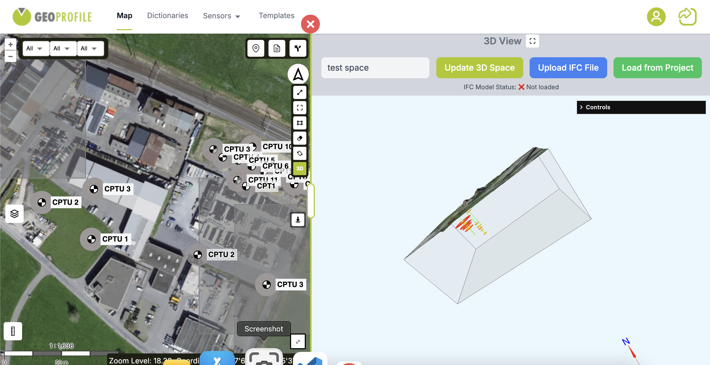
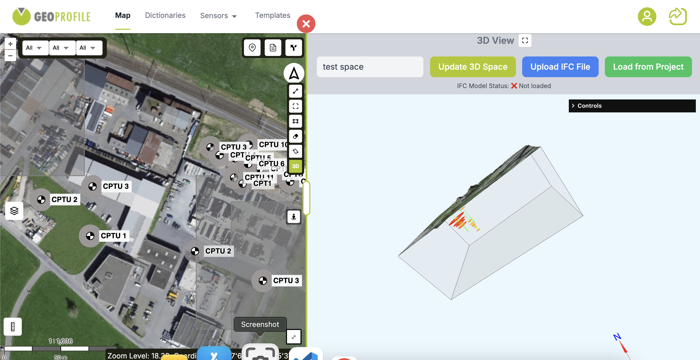

The Concept
A comprehensive geotechnical information management system that visualizes soil layers, borehole data in 3D, and integrates spatial analysis with DEM, satellite imagery, IFC file georeferencing, and interactive mapping capabilities for geotechnical engineering and site investigation.
Key Features
- 3D Borehole Visualization: Interactive 3D representation of soil layers and borehole data using Three.js, enabling detailed subsurface exploration and stratigraphic analysis.
- IFC File Integration: Support for georeferencing and uploading IFC (Industry Foundation Classes) files to 3D space, enabling BIM model visualization and spatial integration with geotechnical data.
- Terrain & Imagery Analysis: Integrated DEM and high-resolution satellite imagery for terrain profiling, slope analysis, and contextual site visualization.
- Interactive Mapping & Navigation: OpenLayers-powered multi-layer maps with spatial querying, street view, and route finding for site visualization and field planning.
- Data Management: Centralized storage and retrieval of geotechnical reports, borehole logs, soil samples, and laboratory test results with spatial indexing.
 



Technology Stack
- 3D Visualization: Three.js for rendering soil layers, borehole profiles, and subsurface geological structures in interactive 3D environments.
- Web Mapping: OpenLayers for 2D mapping interface with WMS/WMTS support and custom tile layers for satellite imagery and DEM data.
- Frontend: React for building responsive UI components with real-time data updates and interactive geotechnical analysis tools.
- Backend: Node.js with Express for API services, data processing, and integration with geotechnical databases and imagery servers.
- Database: PostgreSQL with PostGIS for spatial data storage, enabling complex geospatial queries on borehole locations and subsurface data.
- Routing & Navigation: Integration with routing APIs for optimal path calculation between survey sites and project locations.
Impact
Geoprofile streamlines geotechnical data management by combining 3D subsurface visualization with comprehensive spatial analysis tools. The platform enhances decision-making for engineering projects through integrated access to borehole data, terrain analysis, and satellite imagery. Built with Three.js, OpenLayers, and React, it demonstrates advanced capabilities in 3D geospatial visualization and full-stack GIS development for specialized engineering applications.
This project is not accessible to the public. For more details, feel free to contact me.